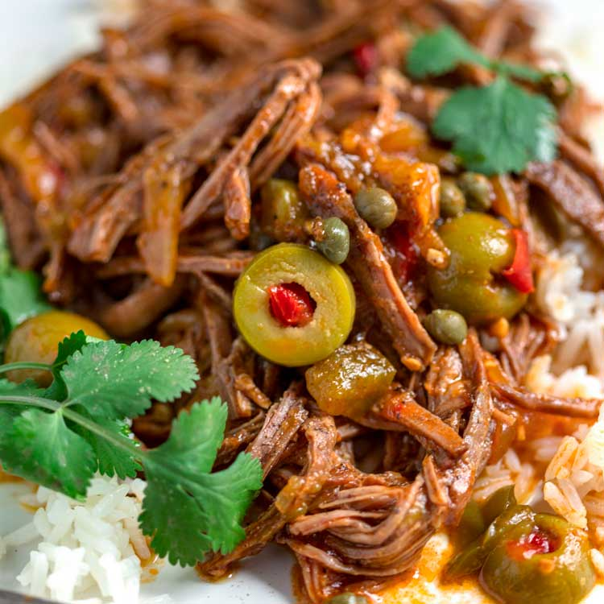

Ropa Vieja

Description
So what is ropa vieja? It’s a delicious dish with an unappetizing name – it literally translates to “old clothes.”
Spanish in origin, its palette of Latin seasonings is unmatched: salty, spicy, savory, and earthy… it’s all there!
This ropa vieja recipe uses two of my favorite spice blends: adobo and sazon. Making these mixes at home is less expensive and
allows you to avoid excessive sodium and dyes. A win-win!
The shredded steak is perfect to throw into fajitas or onto a quick sandwich. Like to keep things simple? Serve with white or yellow rice and let the steak, veggies, and sauce take it from there.
Ingredients
- Flank Steak – A great, lean cut that becomes melt-in-your-mouth tender after slow cooking.
- Yellow Onions & Bell Peppers – Any onion can be used as a substitute, as can any bell pepper – I like using a mix for a variety of color and flavor.
- Sliced Garlic – It becomes nutty, fragrant, and savory when cooked, and all of that flavor leaks right into the sauce.
- Sofrito – A viscous, spicy, and acidic Latin sauce. A salsa-like Latin cooking base made of tomato, onion, green peppers, cilantro and garlic. Watered-down tomato paste is a less flavorful alternative.
- Beef Broth & Tomato Sauce – To help season and tenderize the meat in the oven, then boiled down into a tangy sauce.
- Sazon Seasoning – Another blend that you can either buy pre-made or make at home without dyes, with less MSG, and with even more flavor.
- Spanish Green Olives Stuffed with Pimentos – It’s hard to beat these briny, oily olives. I don’t recommend substituting – they add a unique flavor that’s hard to replace.
- Red Pimentos – These can be replaced with other sweet red peppers, if desired.
- Capers – Very salty but also floral and lemony.
- Cilantro – For a refreshing garnish.
Steps
- Prep the Vegetables. Chop the onions and peppers into thin pieces and mince the garlic.
- Season the Steak. Cut the flank steak in half, so that it will fit into the pot, and pat down all sides with the adobo seasoning.
- Heat a heavy-bottomed Dutch oven on medium high, adding your cooking oil of choice. Place the steak halves into the pot and rotate to sear on all sides.
- Remove the meat from the pot and lower the heat to medium. Throw in half of the garlic and peppers, then add all of the onions. Sweat the veggies for 10 minutes.
- Add the sofrito and tomato sauces, sazon seasoning, pepper, and broth and bring to a boil. Put the steak back in the pot and cover with the vegetables. Reduce the heat to low and simmer for 45 minutes.
- Throw in the olives, pimentos, capers, and the rest of the peppers. Simmer, covered, for another 90 minutes.
- Remove the meat and carefully shred with two forks. Meanwhile, bring the pot’s contents to a boil, then add the shredded steak back in. Cook for 10 more minutes before serving.